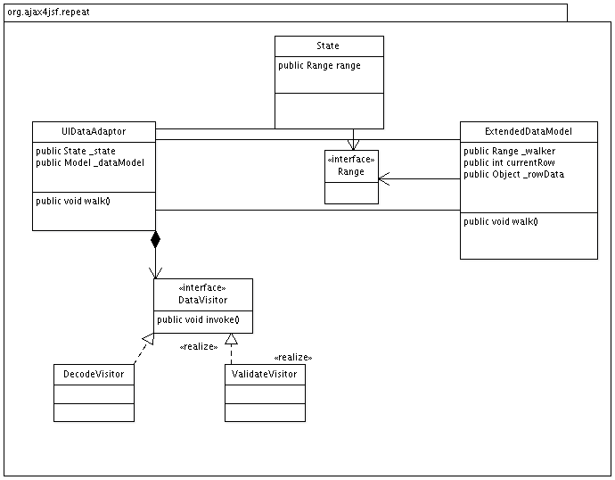

Base iteration component classes and simple repeater implementations.
This package contain extensions for JSF UIData component and model, used in extended iterable components

Main extensions from UIData
- Use java.lang.Object for row key, instead of simple int. allow use this base class in complex structures like tree
- Keep "visual" state ( output behavior ) of component as separate class. In ordinar UIData it was simple first/rows attributes. In extended iteration
it can include open/closed tree nodes keys, sorting order, selection state, columns width etc. This class provide Range object for iteration on rows in data model.
- For keep base classes independed from complex data models, iteration on rows data moved from component to model and use "visitor" pattern.
- For ajax responses, UIDataAdaptor component can perform updates on single or limited set of data values.